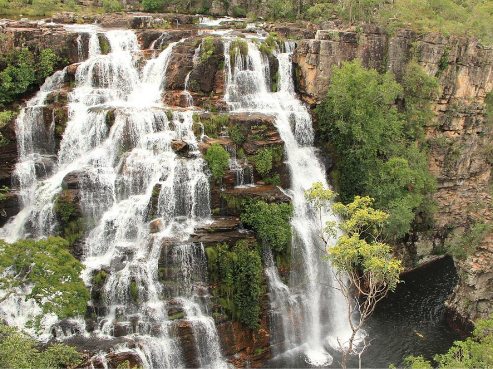

Goiás, um estado no centro do Brasil, alberga a savana acidentada, cidades da era colonial e uma agricultura de grande escala. O Parque Nacional da Chapada dos Veadeiros é uma reserva de montanhas paisagísticas com trilhos, rios, desfiladeiros e quedas de água. Fundadas durante o século XVIII, as cidades do ciclo de ouro de Pirenópolis e Goiás Velho (antiga capital do estado) distinguem-se pela arquitetura colonial portuguesa e pelas vibrantes festas cristãs.

Voltar